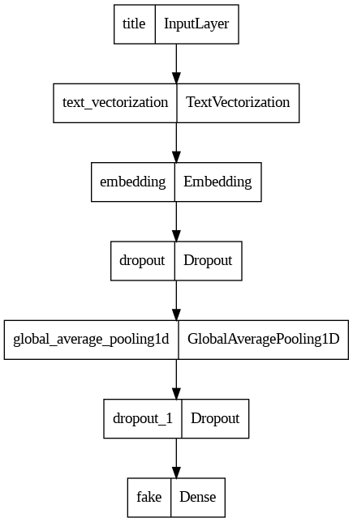
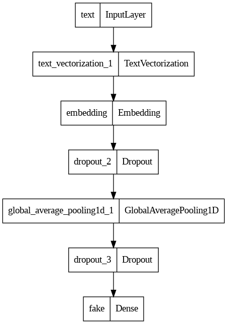

Rampant misinformation —often called “fake news”— is one of the defining features of contemporary democratic life. In this post, we will develop and assess a fake news classifier using Tensorflow.
1. Acquiring Training Data
First, we import all the necessary packages and read in the data. We will also import stopwords (a word that is usually considered to be uninformative, such as “the,” “and,” or “but”), which we will use later.
Each row of the data corresponds to an article. The title column gives the title of the article, while the text column gives the full article text. The final column, called fake, is 0 if the article is true and 1 if the article contains fake news, as determined by the authors of the paper above.
import numpy as npimport pandas as pdimport tensorflow as tfimport reimport stringfrom tensorflow.keras import layersfrom tensorflow.keras import lossesfrom tensorflow import kerasfrom sklearn.model_selection import train_test_splitfrom sklearn.preprocessing import LabelEncoder# for embedding visualizationimport plotly.express as pximport plotly.io as piopio.templates.default ="plotly_white"train_url ="https://github.com/PhilChodrow/PIC16b/blob/master/datasets/fake_news_train.csv?raw=true"train_df = pd.read_csv(train_url)import nltknltk.download('stopwords')from nltk.corpus import stopwordsstop = stopwords.words('english')train_df
[nltk_data] Downloading package stopwords to /root/nltk_data...
[nltk_data] Package stopwords is already up-to-date!
Unnamed: 0
title
text
fake
0
17366
Merkel: Strong result for Austria's FPO 'big c...
German Chancellor Angela Merkel said on Monday...
0
1
5634
Trump says Pence will lead voter fraud panel
WEST PALM BEACH, Fla.President Donald Trump sa...
0
2
17487
JUST IN: SUSPECTED LEAKER and “Close Confidant...
On December 5, 2017, Circa s Sara Carter warne...
1
3
12217
Thyssenkrupp has offered help to Argentina ove...
Germany s Thyssenkrupp, has offered assistance...
0
4
5535
Trump say appeals court decision on travel ban...
President Donald Trump on Thursday called the ...
0
...
...
...
...
...
22444
10709
ALARMING: NSA Refuses to Release Clinton-Lynch...
If Clinton and Lynch just talked about grandki...
1
22445
8731
Can Pence's vow not to sling mud survive a Tru...
() - In 1990, during a close and bitter congre...
0
22446
4733
Watch Trump Campaign Try To Spin Their Way Ou...
A new ad by the Hillary Clinton SuperPac Prior...
1
22447
3993
Trump celebrates first 100 days as president, ...
HARRISBURG, Pa.U.S. President Donald Trump hit...
0
22448
12896
TRUMP SUPPORTERS REACT TO DEBATE: “Clinton New...
MELBOURNE, FL is a town with a population of 7...
1
22449 rows × 4 columns
2. Making a Dataset
In this part, we will write a function called make_dataset(), which accomplishes two things:
Remove stopwords from title and text columns.
Construct and return a tf.data.Dataset with two inputs and one output. The input should be of the form (title, text), and the output should consist only of the fake column.
Then, we will call this function on the training dataframe, then split 20% of the output to use for validation.
def make_dataset(df):# remove stopwords df['title'] = df['title'].apply(lambda x: ' '.join([word for word in x.split() if word notin (stop)])) df['text'] = df['text'].apply(lambda x: ' '.join([word for word in x.split() if word notin (stop)]))# create Dataset Dataset = tf.data.Dataset.from_tensor_slices(({"title" : df[["title"]],"text" : df[["text"]] }, {"fake" : df["fake"] }))# batch our Dataset to increase training speed Dataset = Dataset.batch(100)return Datasetdata = make_dataset(train_df)data = data.shuffle(buffer_size =len(data))train_size =int(0.8*len(data)) # split Datasetval_size =int(0.2*len(data))train = data.take(train_size)val = data.skip(train_size).take(val_size)
Now, we will calculate the base rate for the model.
train_df["fake"].value_counts()
1 11740
0 10709
Name: fake, dtype: int64
Our base model will always guess the most frequent label (or 1, in this case). This will result in the base rate of \(\frac{11740}{11740+10709}\) or approximately \(52.3\%\).
To improve this rate, we will prepare a text vectorization layer that we can implement in our models.
size_vocabulary =2000def standardization(input_data): lowercase = tf.strings.lower(input_data) no_punctuation = tf.strings.regex_replace(lowercase,'[%s]'% re.escape(string.punctuation),'')return no_punctuationtitle_vectorize_layer = layers.TextVectorization( standardize=standardization, max_tokens=size_vocabulary, # only consider this many words output_mode='int', output_sequence_length=500)title_vectorize_layer.adapt(train.map(lambda x, y: x["title"]))text_vectorize_layer = layers.TextVectorization( standardize=standardization, max_tokens=size_vocabulary, output_mode='int', output_sequence_length=500)text_vectorize_layer.adapt(train.map(lambda x, y: x["text"]))
3. Create Models
We aim to create three models to answer the following question:
When detecting fake news, is it most effective to focus on only the title of the article, the full text of the article, or both?
All three models will be utilizing the Functional API.
First, we will define our inputs title_input and text_input below.
title_input = keras.Input( shape=(1,), name ="title", # same name as the dictionary key in the dataset dtype ="string")text_input = keras.Input( shape=(1,), name ="text", dtype ="string")
First Model
The first model will only make use of the article’s title.
title_features = title_vectorize_layer(title_input) # apply this TextVectorization layer to title_input# use embeddingstitle_features = layers.Embedding(size_vocabulary, output_dim =3, name="embedding")(title_features)title_features = layers.Dropout(0.2)(title_features)title_features = layers.GlobalAveragePooling1D()(title_features)title_features = layers.Dropout(0.2)(title_features)title_features = layers.Dense(2, activation='relu', name="fake")(title_features)
# only using titlemodel1 = keras.Model( inputs = [title_input], outputs = title_features)model1.summary()
from tensorflow.keras import utilsutils.plot_model(model1)

model1.compile(optimizer="adam", loss = losses.SparseCategoricalCrossentropy(from_logits=True), metrics=["accuracy"])
history = model1.fit(train, validation_data=val, epochs =20, verbose =True)
Epoch 1/20
/usr/local/lib/python3.10/dist-packages/keras/engine/functional.py:639: UserWarning: Input dict contained keys ['text'] which did not match any model input. They will be ignored by the model.
inputs = self._flatten_to_reference_inputs(inputs)
from tensorflow.keras import utilsutils.plot_model(model2)

model2.compile(optimizer="adam", loss = losses.SparseCategoricalCrossentropy(from_logits=True), metrics=["accuracy"])
history = model2.fit(train, validation_data=val, epochs =20, verbose =True)
Epoch 1/20
/usr/local/lib/python3.10/dist-packages/keras/engine/functional.py:639: UserWarning: Input dict contained keys ['title'] which did not match any model input. They will be ignored by the model.
inputs = self._flatten_to_reference_inputs(inputs)
We observe that the validation accuracy stabilized between 97% and 99%.
4. Best Model Evaluation
Using the best model (the third model), we will test the model performance on unseen test data. First, we will need to convert the dataset using the function make_dataset() defined in Part 2.
We get 98.48% as our accuracy. That is impressive!
5. Embedding Visualization
Lastly, we will visualize our embedding layer from the best model. To achieve this, we will use principal component analysis (PCA) to reduce the dimension down. In particular, we will create a 2-dimensional embedding plot.
weights = model3.get_layer('embedding').get_weights()[0] # get the weights from the embedding layervocab = title_vectorize_layer.get_vocabulary() # get the vocabulary from our data prep for laterfrom sklearn.decomposition import PCApca = PCA(n_components=2)weights = pca.fit_transform(weights)embedding_df = pd.DataFrame({'word' : vocab,'x0' : weights[:,0],'x1' : weights[:,1]})
import plotly.express as pxfig = px.scatter(embedding_df, x ="x0", y ="x1", size = [2]*len(embedding_df), hover_name ="word")fig.show()
Unfortunately, the plot was not rendered through Quarto, so I have screenshotted the visualization from Google Colab (attached below).